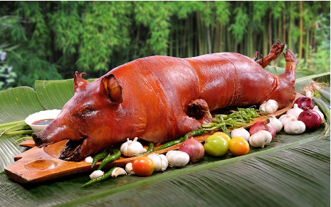
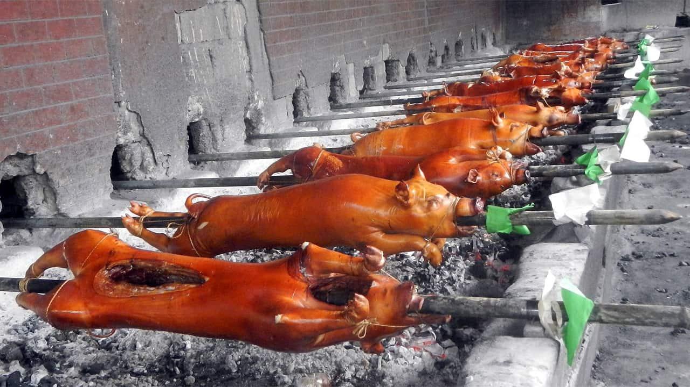

Authentic Lechon
Classic Lechon (Suckling Pig)
An indispensable delicacy in the Philippine celebrations, lechon — also known as lechon baboy — is a dish in which the entire pig or piglet is stuffed, glazed, and slowly spit-roasted over coals. The most coveted part is the crispy, golden brown skin, which tops the tender meat that melts in one's mouth. The preparation of lechon is lengthy, but the Filipinos see it as an excellent opportunity to socialize. Traditionally, the pig or piglet is slaughtered early in the morning, its entrails are removed, and boiling water is poured over the skin so the hair can be scraped off. Next, salt and pepper are rubbed on the inside and the outside, and the pig is skewered on a long bamboo pole.
This recipe gives step-by-step instructions on how to make a classic Filipino roasted pig. Its insides are filled with lemongrass, bay leaves, garlic, and onion, and the skin is glazed with evaporated milk.
THE LECHON
Ingredients
- 1 whole pig (20 kg) (44 lb)
- 10-20 bundles of lemongrass
- 15 bay leaves
- 1 kg (2.2 lb) garlic
- 1 kg (2.2 lb) onion
- 2-3 cups (550-820g) salt and pepper
Preparations
- Take a pig whose entrails have been removed and wash its inside with boiling water. Leave to drain.
- Working in batches if necessary, add chicken pieces to pot in a single layer, skin side down, making sure not to overcrowd the pot. Cook until well browned, 6 to 7 minutes. Using tongs, flip chicken pieces and cook until lightly brown on the second side, about 3 minutes. Transfer chicken to a plate and set aside. 
- Rub the mixture of salt and pepper on the pig’s skin and its inside.
- Skewer a pig on a long bamboo stick
- Prepare the stuffing by pounding together lemon grass and spring onions, and mixing them with bay leaves, garlic, and onion. Stuff the pig and sew its belly with a kitchen thread.
- To make the skin red and crispy, brush it with evaporated milk.
- Roast the pig for 4 to 5 hours over hot charcoal, until the meat is tender. Occasionally, glaze the skin with the remaining evaporated milk.
COOKING TIPS
MEAT
Lechon can either be prepared with a suckling pig, weighing 4 to 5 kilos, or an adult pig of 18 to 20 kilos. After the pig has been slaughtered, its entrails are removed, and the hair is removed by scraping or by burning the skin. The pig is then washed with boiling water, rubbed with salt and pepper, and stuffed.
SKEWERING
Traditionally, the pig is skewered on a long bamboo pole which is sometimes replaced with a metal rod. Usually, this step is done before stuffing the pig, although some recipes suggest doing it vice versa.
STUFFING
There is a whole array of ingredients which can be used for stuffing lechon. Usually, the stuffing is a combination of vegetables and herbs. Lemongrass can be used in bundles or smashed to release its citrusy aroma. Leeks, scallions, chives, and shallots can be combined, or used separately. Garlic, on the other hand, can either be crushed or used in cloves. Bay leaves and star anise give the dish a richer taste, while tamarind leaves help keep the pig’s shape. After the pig has been stuffed, its belly is sewn with a kitchen twine to keep the stuffing firmly in place during cooking. Keep in mind that the stuffing is discarded before serving lechon.
COOKING
Most recipes suggest cooking lechon over hot coals, although in some regions it is done over an open flame. The trick is to roast the lechon slowly, so all the juices remain inside, the meat becomes tender and thoroughly cooked, and the skin turns crisp. Depending on the size of the pig, roasting can take from 5 to up to 8 hours and is done by constantly rotating the skewer.
GLAZING
To make the pig’s skin reddish brown and crispy, it needs to be glazed regularly during baking. The most common options include evaporated milk (which can be diluted with some water) and soy sauce, while some modern recipes claim that the key to that extra crispiness is basting the skin with soft drinks such as Sprite on 7up.
SAUCE
Even though lechon results in perfectly succulent meat, occasionally it can be served with sauce. The lechon sauce is made with chicken or pork liver or liver pâté, which is mixed with Filipino vinegar suka, brown sugar, onion, garlic, and breadcrumbs, and has a thick texture.